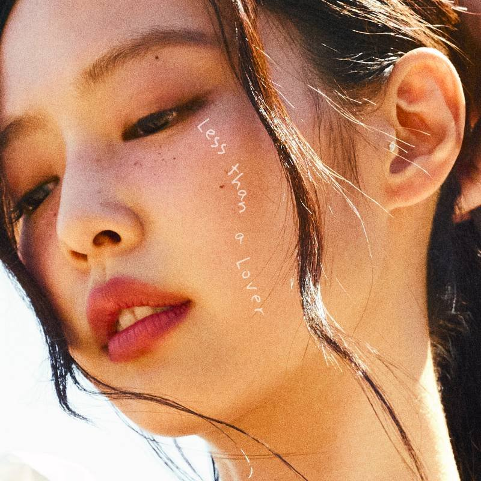
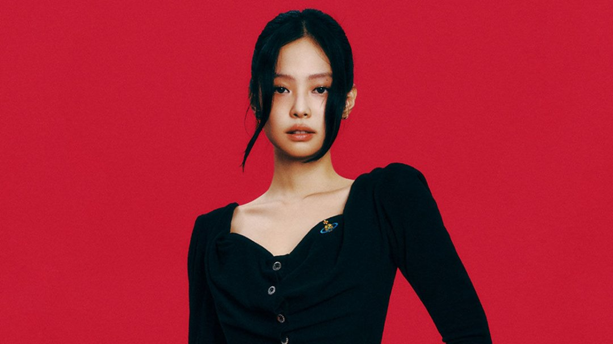
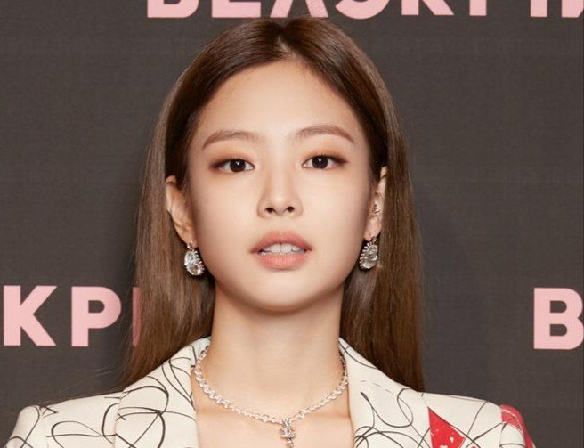
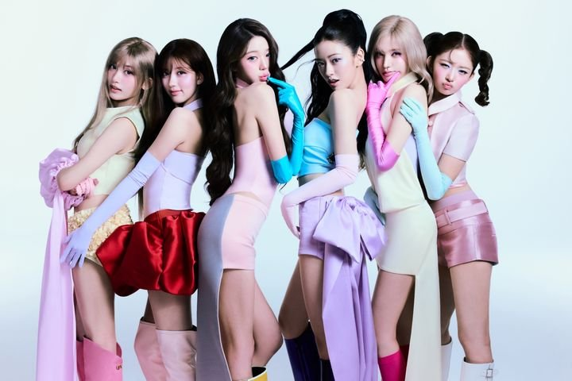

제69회 그래미 어워즈 후보에 이름을 올린 K팝 가수는 세 팀이에요. 제니가 '드라큘라'로 본상인 '올해의 레코드'를 포함해 2개 부문, 아이브와 키키가 올해 새로 생긴 '베스트 아시안 팝 뮤직 퍼포먼스' 부문에 올랐어요. 같은 후보라도 두 부문의 무게는 꽤 달라요.
📷 사진 1 자리
▲ '드라큘라'로 첫 그래미 후보에 오른 제니 · 사진=OA엔터테인먼트 제공
제니, 첫 그래미 후보가 바로 본상
미국 레코딩 아카데미가 현지 시각 16일 후보 명단을 발표했어요. 제니는 호주 밴드 테임 임팔라와 함께한 '드라큘라'로 '올해의 레코드'와 '베스트 팝 듀오/그룹 퍼포먼스' 후보가 됐어요. 제니에게는 이번이 첫 그래미 후보예요.
▶ 영상 1 자리
'올해의 레코드'는 그래미 본상(제너럴 필드)에 속하는 부문이에요. K팝 가수가 이 부문 후보에 오른 건 지난해 로제의 'APT.'에 이어 두 번째예요. 블랙핑크 멤버가 2년 연속 이름을 올린 셈이에요.
📷 사진 2 자리
▲ '올해의 레코드' 후보에 오른 제니 · 사진=OA엔터테인먼트 제공
경쟁곡도 만만치 않아요. 브루노 마스 '아이 저스트 마이트', 테일러 스위프트 '더 페이트 오브 오필리아', 레이 '웨어 이즈 마이 허즈번드!' 등이 같은 부문에 있어요.
'드라큘라'는 원래 테임 임팔라 솔로곡
이 곡은 처음부터 제니의 노래가 아니었어요. 테임 임팔라가 지난해 9월 먼저 낸 솔로곡이에요. 올해 2월 제니의 목소리가 더해진 버전이 나오면서 더 크게 퍼졌어요.
📷 사진 3 자리
▲ 블랙핑크 제니 · 사진=YG엔터테인먼트 제공
빌보드 '핫 100'에서는 자체 최고 3위까지 올랐고 20주 넘게 톱10을 지켰어요. 원곡보다 협업 버전이 차트를 이끈 곡이라, 후보 명단에도 두 사람이 함께 올랐어요.
아이브·키키가 오른 신설 '아시안 팝' 부문
아이브는 '뱅뱅', 키키는 '404'로 '베스트 아시안 팝 뮤직 퍼포먼스' 후보가 됐어요. 레코딩 아카데미가 올해 6월 신설을 발표한 부문으로, K팝·J팝·C팝처럼 아시아에서 나왔거나 아시아 시장에서 널리 인정받는 음악이 대상이에요.
📷 사진 4 자리
▲ '뱅뱅'으로 신설 '베스트 아시안 팝 뮤직 퍼포먼스' 후보에 오른 아이브 · 사진=스타쉽 엔터테인먼트 제공
같은 부문에는 일본의 베이비메탈과 리사, 필리핀의 SB19와 비니가 함께 올랐어요. K팝은 아이브와 키키 두 팀뿐이에요.
두 팀만 남은 데는 이유가 있어요. 방탄소년단이 이 부문 출품을 거부했고 하이브·SM·JYP·YG 네 기획사도 작품을 내지 않았어요.
▶ 영상 2 자리
'뱅뱅'은 11월 15일 MMA 2026에서 '올해의 베스트송'을 받은 곡이기도 해요. 국내 대상곡이 그대로 그래미 후보곡이 된 경우예요.
시상식은 2027년 2월 7일
제69회 그래미 시상식은 2027년 2월 7일 미국 로스앤젤레스 크립토닷컴 아레나에서 열려요. 제니가 '올해의 레코드'를 받으면 K팝 가수의 첫 그래미 본상 수상이 돼요.
같은 날 발표됐지만 두 소식은 따로 읽는 편이 정확해요. 제니는 장르 구분 없는 본상에서 팝스타들과 겨뤄요. 아이브·키키는 대형 기획사가 빠진 새 부문에서 K팝을 대표하는 자리라 결과를 볼 때 기준도 달라야 해요.
그래미 후보에 오른 K팝은 제니(올해의 레코드·베스트 팝 듀오/그룹 퍼포먼스), 아이브·키키(베스트 아시안 팝 뮤직 퍼포먼스) 세 팀이에요. 수상 결과는 2027년 2월 7일(현지 시각) 로스앤젤레스 시상식에서 나와요.
함께 보면 좋은 이슈



